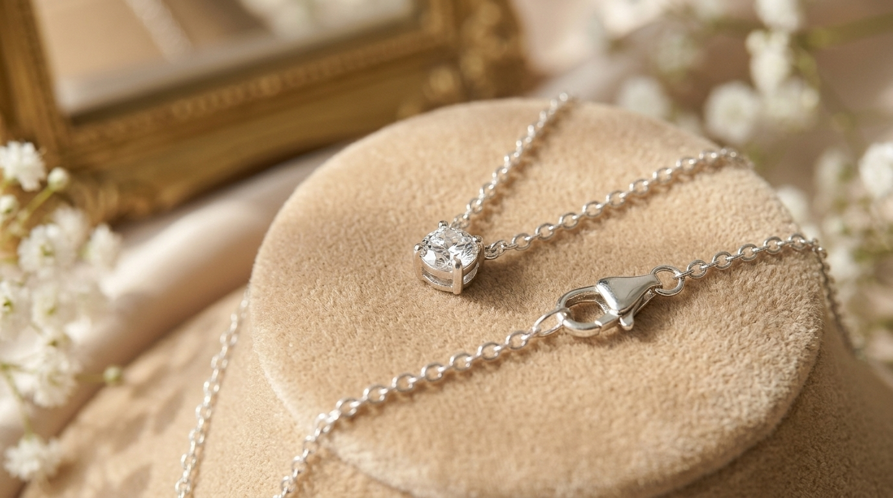
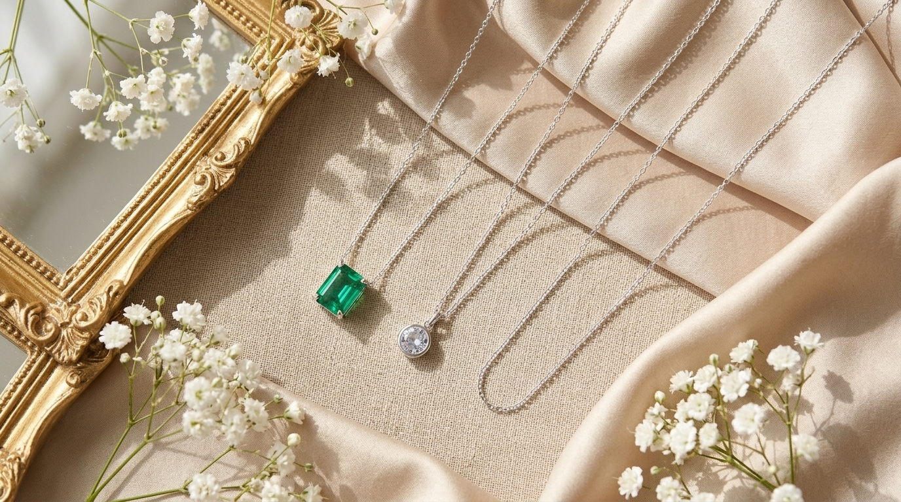
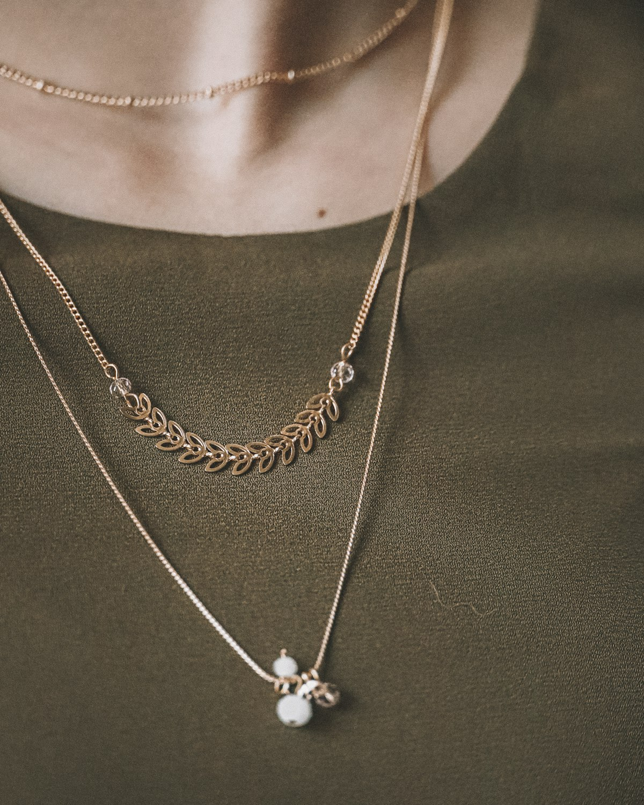
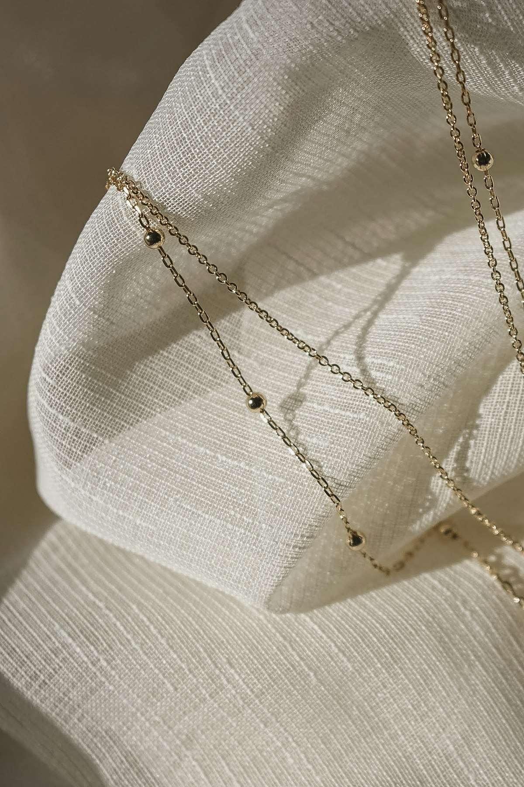

In an era where personal fashion leans ever closer to quiet luxury and intentional wardrobe curation, the timeless dainty sterling silver necklace has solidified its position as an indispensable accessory. Unlike heavy statement collars that demand specific necklines or overwhelm modest silhouettes, a delicate silver necklace offers a graceful whisper of light against the collarbone. It moves effortlessly with the wearer, catching sunlight at morning brunch and glowing softly across an intimate dinner table.
Whether you choose a minimalist silver necklace as your everyday signature piece, create dynamic cascades through layering necklaces, or select an intimate personalized pendant as an unforgettable gift for her, delicate jewelry holds extraordinary emotional resonance. In this comprehensive guide, we unpack what truly defines a dainty necklace, examine the lasting benefits of authentic 925 sterling silver, decode the most sought-after styles, and provide practical styling secrets to keep your delicate chain gleaming for years to come.
What Makes a Necklace "Dainty"?

The word "dainty" in fine jewelry design represents a deliberate aesthetic philosophy. A genuine dainty sterling silver necklace achieves visual elegance through delicate proportions, subtle light reflection, and mechanical refinement.
The defining element is the chain gauge. While traditional statement pieces utilize 2.5mm to 4mm chain links, a delicate silver chain measures between 0.8mm and 1.3mm. These whisper-thin links—crafted as diamond-cut cable chains, sparkling Singapore twists, or micro box links—feature beveled facets that catch ambient light with every slight movement.
Pendant scale is equally restrained. Rather than heavy medallions, dainty pendants measure between 5mm and 10mm across. Whether styled as a micro bezel-set crystal, an initial disc, or an organic bud, the pendant complements the collarbone line without dominating your neckline.
Weighing between 1.5 and 3.5 grams, these pieces offer true "second skin" comfort, making them ideal for women who appreciate featherweight elegance.
Why Choose Sterling Silver (925) for Delicate Jewelry?

When selecting fine jewelry, metal quality determines both longevity and skin comfort. While costume jewelry relies on base brass coated in temporary plating, investing in a genuine 925 sterling silver necklace delivers heirloom value that lasts indefinitely.
Pure silver (99.9% fine silver) is naturally too soft for ultra-fine chains, bending easily under daily tension. Sterling silver solves this through an alloy of 92.5% pure silver strengthened with 7.5% copper. This formulation bolsters tensile strength, ensuring delicate chain links endure everyday routines.
Polished sterling silver also provides superior optical brilliance, reflecting over 95% of visible light for a radiant moonlight luster. Free from irritating nickel and lead, authentic sterling silver is naturally hypoallergenic and gentle on sensitive skin.
Key Advantages of 925 Sterling Silver
- Tensile Durability: Solid metal links that can be soldered and repaired by bench jewelers rather than discarded.
- Gentle on Sensitive Skin: Hypoallergenic, nickel-free formulation prevents contact dermatitis along delicate collarbones.
- Lasting Value: An internationally recognized precious metal that can be restored and cleaned indefinitely.
Popular Dainty Silver Necklace Styles

The beauty of minimalist design lies in its diverse interpretations. From bare metallic gleam to personalized keepsakes, several prominent silhouettes define today's fine jewelry landscape.
1. The Solitaire Bezel Pendant
Nothing epitomizes quiet luxury quite like a solitary bezel-set gem suspended from a whisper chain. Unlike prong settings that can snag on delicate knitwear, a smooth sterling silver bezel cups the stone securely. Set with a sparkling lab diamond, moissanite, or luminous freshwater pearl, this style floats delicately against the hollow of the throat.
2. The Personalized Initial Disc
Initial pendants offer an effortless blend of modern minimalism and heartfelt sentiment. Crafted as a petite 6mm to 8mm circular coin stamped with a clean sans-serif initial, this design serves as an intimate everyday reminder of a child, partner, or personal milestone.
3. Chain-Only Minimalist Collars
Who says a necklace requires a pendant? A bare delicate silver chain worn solo makes a remarkably sophisticated statement. Delicate flat mariner links, miniature paperclip chains, and diamond-cut curb chains reflect ribbons of liquid light across the collarbone without needing ornamentation.
4. Bezel Birthstone Accents
Adding a touch of vibrant color through a petite 3mm to 4mm birthstone provides customized charm. Natural stones like emerald, sapphire, amethyst, and moonstone provide meaningful individuality while remaining understated enough for corporate office wear.
5. Pre-Curated Multi-Strand Layered Necklaces
For women who adore cascading texture without the frustration of tangled clasps, pre-curated multi-strand necklaces unite two or three staggered silver chains onto a single balance-weighted closure.
How to Choose the Right Chain Length

Selecting the proper chain length is essential for achieving an effortless, comfortable fit. Because dainty necklaces are designed to harmonize with your neckline, slight variations in length dramatically change how the piece frames your face.
- 14 to 15 Inches (Choker Fit): Hugs the base of the throat snugly. This length looks stunning with open boatneck tops, strapless dresses, and off-the-shoulder cuts.
- 16 Inches (Collarbone Placement): Rests precisely at the hollow of the clavicle. This is the ideal length for petite frames and pairs seamlessly with V-neck blouses and button-down shirts.
- 18 Inches (Princess Length - Universal Standard): Sits an inch below the clavicle. This universally flattering length suits over 85% of women and transitions comfortably over high crewnecks and crew tees.
- 20 to 22 Inches (Matinee Length): Drapes across the upper chest line, creating vertical elongation. Excellent as the longest anchor piece in layered chain combinations.
When purchasing your necklace, look for pieces equipped with an integrated 2-inch extender chain. An adjustable 16-to-18-inch chain gives you the versatility to modify the drape depending on the shirt or sweater you select each morning.
How to Style and Layer Dainty Silver Necklaces

Mastering the art of layering necklaces allows you to express your creative style while maximizing your existing jewelry collection. Follow these three proven silversmith styling principles:
Rule 1: Stagger Your Lengths by at Least 2 Inches
Pendants positioned at identical lengths collide and cause knotting. Maintain a 2-inch gap between strands—such as pairing a 14-inch plain choker with a 16-inch initial charm and an 18-inch gem pendant—so each chain claims its own visual space.
Rule 2: Mix Link Textures and Weights
Combining identical link patterns often leads to interlocking links. Contrast your stack by pairing a smooth snake choker with an open diamond-cut cable chain and an elongated paperclip link for captivating visual depth.
Rule 3: Establish One Focal Anchor
Avoid competing focal points by designating one necklace as the visual star. If your lowest chain features a vibrant gemstone or botanical charm, keep upper strands clean and unadorned for an intentional, polished aesthetic.
Essential Care and Cleaning Secrets

Because genuine 925 silver naturally contains 7.5% copper, it reacts over time with atmospheric sulfur compounds to form silver sulfide (tarnish). This natural surface reaction is harmless to the underlying precious metal and easily managed with simple habits.
Practice the "Last On, First Off" Rule
Cosmetics, hairsprays, perfumes, and lotions contain chemicals that accelerate surface tarnishing. Put your silver necklace on as the final step of getting dressed, and remove it before showering, swimming, or sleeping.
Gentle At-Home Cleaning Method
Never use abrasive toothpastes or harsh dips on delicate chains. Instead, soak your necklace in warm water with a few drops of mild dish soap for 5 minutes, rinse thoroughly in clean water, pat dry with a soft cloth, and buff gently with a microfiber jewelry cloth.
Airtight Humidity Protection
When not in use, store your dainty necklace in an airtight zip pouch or an anti-tarnish lined jewelry box. Adding a silica gel packet absorbs ambient moisture, keeping your silver bright and tarnish-free.
How to Spot Authentic Sterling Silver

With an overwhelming volume of fast-fashion jewelry flooding online marketplaces, learning how to verify authentic 925 sterling silver protects your hard-earned investment.
1. The Hallmark Quality Stamp
Under international consumer protection standards, authentic precious silver jewelry must bear an engraved hallmark identifying its purity. Look closely at the small metal tag adjacent to the clasp or the reverse of the pendant bail for stamps such as "925", "S925", or "STERLING". If a piece lacks any hallmark whatsoever, it is overwhelmingly likely a plated brass imitation.
2. The Magnet Inspection
Precious silver is inherently diamagnetic, meaning it demonstrates virtually zero attraction to magnetic fields. Hold a strong neodymium household magnet against the necklace chain. If the chain snaps firmly to the magnet, the piece is fabricated from iron, nickel, or steel disguised beneath a silver coating.
3. The Olfactory Scent Test
Solid sterling silver has no noticeable smell. If you rub the chain briskly between your fingers and detect a sharp, sour metallic odor reminiscent of copper pennies or brass doorknobs, the metal contains heavy base alloy concentrations.
Buying Checklist & Where to Find the Best Pieces

Before completing your purchase—whether treating yourself or looking for an unforgettable gift for her—keep these vital quality indicators in mind:
- Soldered Jump Rings: Ensure the tiny loop connecting the clasp to the chain is laser-welded or soldered closed. Open un-soldered jump rings easily pull apart if the necklace catches on clothing.
- Clasp Mechanism Reliability: Spring-ring clasps are ideal for maintaining a minimal profile, but ensure the spring lever has firm tension. A micro-lobster claw clasp provides slightly higher tensile security for active lifestyles.
- Extender Flexibility: Look for necklaces that feature an integrated 16-inch to 18-inch adjustable extender, allowing you to tailor the drop to various shirt necklines.
- Transparent Warranty and Return Policy: Buy from dedicated jewelry boutiques that stand behind their metal certifications with clear return policies, authentic gift packaging, and responsive customer care.
Frequently Asked Questions
Can I wear my dainty sterling silver necklace every day?
Yes. Authentic 925 sterling silver is durable enough for continuous daily wear. In fact, wearing your necklace frequently is beneficial: the natural, gentle oils produced by your skin naturally polish the silver and slow down airborne oxidation. Simply remove your necklace prior to swimming or showering.
Will a dainty silver necklace break easily?
While delicate chains look fragile, quality 925 silver possesses surprising tensile strength. As long as you avoid harsh pulling, store your chains untangled, and ensure the jump rings are securely soldered, a dainty sterling silver chain will easily endure years of routine everyday wear.
Can I shower with my sterling silver necklace on?
While pure water itself does not damage solid sterling silver, modern municipal tap water frequently contains chlorine, fluoride, and dissolved minerals. Furthermore, body washes and shampoos contain sulfates that accelerate tarnishing. Taking your necklace off before showering ensures its brilliant finish lasts significantly longer.
How do I keep my layered dainty necklaces from tangling?
To prevent tangling, always maintain a minimum 2-inch length difference between layered chains, and mix link styles (such as pairing a round cable chain with a flat paperclip chain). You can also utilize a multi-strand necklace clasp detangler that keeps each chain anchored at a fixed separation.
Why is a dainty sterling silver necklace a great gift?
A dainty silver necklace is a universally flattering gift because its minimalist aesthetic complements every personal fashion style and age group. Because 925 silver is an authentic precious metal, it carries heirloom significance and timeless emotional value without the intimidating price tag of solid gold.
Effortless Elegance That Never Fades
A delicate dainty sterling silver necklace proves that true luxury does not need to shout. Through whisper-thin chains, radiant precious silver luster, and thoughtfully chosen pendants, minimal jewelry creates an understated, luminous statement that elevates every ensemble.
Whether you are investing in your own daily signature piece or surprising someone special with a gift that will be cherished for decades, explore our handcrafted boutique collections today. Discover the timeless magic of fine 925 silver and let your personal style shine with effortless, luminous grace.